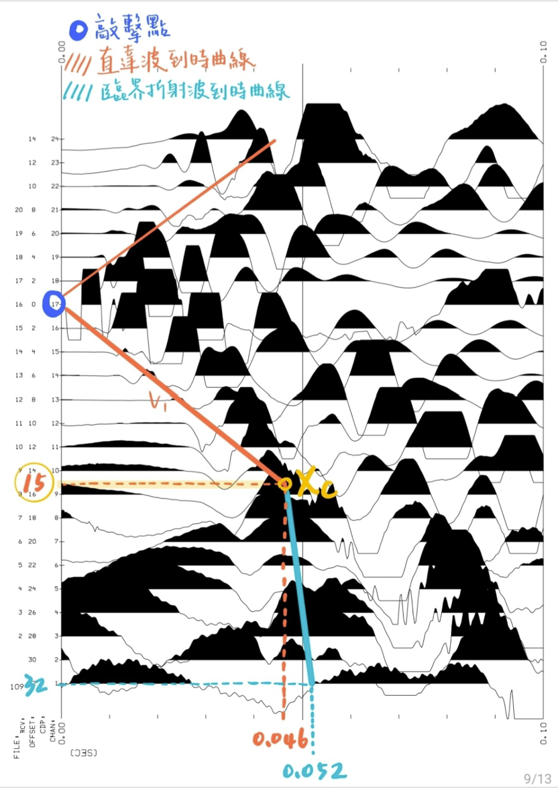
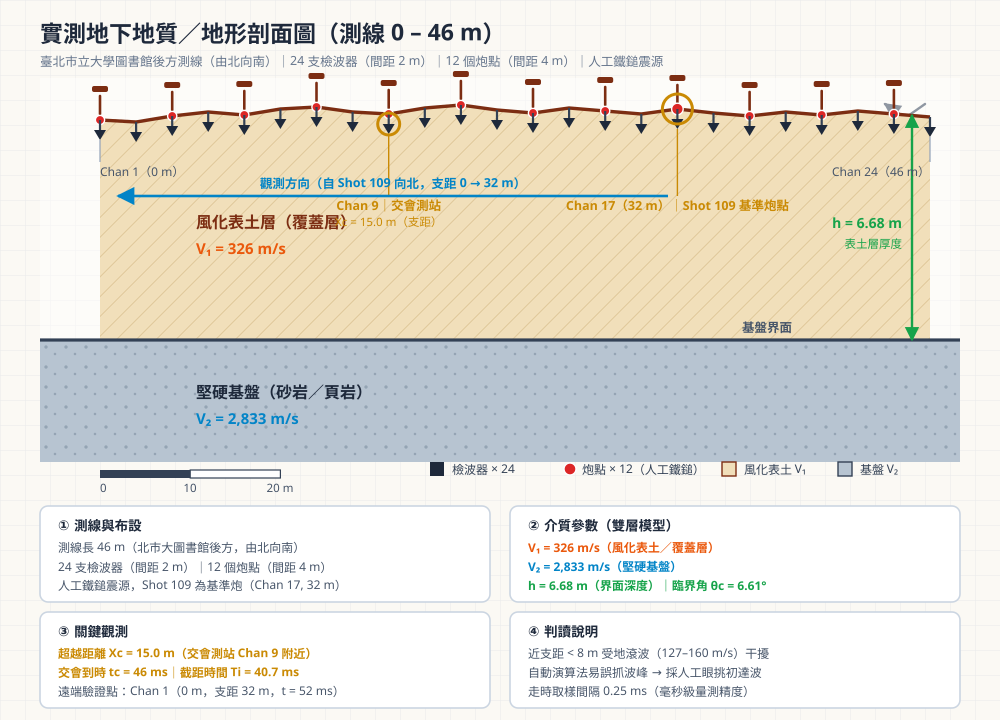

——看不見的地下，怎麼知道？從野外敲擊觀測、司乃耳定律公式推導，到解開地下 6.68 公尺堅硬基盤的完整探究歷程。

量測系統四大環節必須同時正確：震源、受波器、震測儀與電腦的同步閉環協同。
人工重鎚擊發震波，鐵板避免土壤吸收能量，柄部開關感應碰擊瞬間定義 t = 0.000 s。
固定排列（0～46 m，間距 2 m），長鋼釘垂直旋入地表土壤，確保良好機械耦合。
24 通道以 0.25 ms（4000 Hz）高頻同步取樣，記錄長度 0.5 s（2000 點/道）。
即時監看波形訊號，確認無斷線死道，並執行同點重複敲擊之同調疊加 (Stacking)。
同點重複敲擊 N 次，同相位震波振幅增強 N 倍，隨機背景噪聲僅增加 √N 倍，訊噪比提高 √N 倍！
以光的折射透視地底！完整收錄 5 頁手寫實習筆記，詳細展示司乃耳定律、首波機制與超越距離求層厚推導。
五頁手寫筆記其實是一條完整的推導鏈：從「圖上量到什麼」出發，用司乃耳定律解釋物理成因， 再把幾何路徑寫成走時方程式，最後令兩波到時相等，解出層厚。以下把每一步的「為什麼這樣做」用文字串起來。
折射震測的全部推導，都始於一件很單純的事：在每支測站上，記下地震波最早抵達的瞬間。 24 支測站各配一個支距（震源到測站的水平距離），24 組 (距離, 到時) 就能畫在時間軸向下的 t–x 圖上。 手寫筆記上兩條紅、藍鉛筆線，就是把這 24 個點分群後描出的兩條直線： 橘紅色那條是直達波，沿地表近路傳播，距離愈遠到時愈晚， 且是「等比例」增加；藍色那條是臨界折射波，走深部高速層， 所以線條明顯比較平緩。兩線交會的橫座標就是超越距離 Xc = 15 m，交會時間 tc = 0.046 s； 右側另外讀到一組遠端資料 (支距 32 m、到時 0.052 s)，這是下一頁要代入計算的原始數字。 這一頁只做「量測與判讀」，還沒有用到任何公式——但後面所有的數字都從這裡長出來。
在距離－到時圖上，直線的斜率是 時間 ÷ 距離，也就是速度的倒數；因此只要把直線「換算成距離 ÷ 時間」， 就得到波速。直達波通過原點，所以直接用超越點計算： V₁ = 15 m ÷ 0.046 s ≈ 326 m/s，代表鬆軟表土層的波速。 折射波段則取兩個點 (15 m, 0.046 s) 與 (32 m, 0.052 s)，用「兩點差分」消掉起始時間的影響： V₂ = (32 − 15) ÷ (0.052 − 0.046) ≈ 2833 m/s。 V₂ 是 V₁ 的將近九倍，顯示界面之下已是堅硬、波傳得快的地層； 這種「下面比較快」的構造，正是折射震測能夠成立的前提（若下層較慢，折射波永遠不會先到，也就無從觀察）。 最後再把 Xc、V₁、V₂ 一起代入層厚公式，得到 6.68 m——這頁是「代入」，公式的來源在筆記三、四、五。
物理問題要先回答：折射波這條線「為什麼存在」。當波從慢介質（V₁）以某個角度斜射進快介質（V₂）時， 根據司乃耳定律 sin θ₁ / V₁ = sin θ₂ / V₂， 折射角 θ₂ 會比入射角 θ₁ 大。入射角一路加大，折射角就會逼近 90°——此時波不再往下走， 而是貼著界面以 V₂ 的速度水平滑行，這個特殊的入射角就是臨界角。 令上式中的 θ₂ = 90°（sin 90° = 1），立刻得到臨界角公式： sin θc = V₁ / V₂。 用本次資料驗算：326 ÷ 2833 = 0.115，θc ≈ 6.6°，與互動演算板算出的數值一致。 沿界面滑行的波又依惠更斯原理，不斷把能量以同一個 θc 角度送回地表，形成被稱為首波（head wave）的波前； 因為它走的是高速層，所以距離夠遠時，它會比一直走表土的直達波「後來居上」——這正是 t–x 圖上第二條直線的來源。
知道路徑長什麼樣子，就能把時間加起來。折射波從震源 S 出發到受波器 R，可拆成三段： 斜向下行進入覆蓋層、沿界面水平滑行、再斜向上升回地表。 下行與上行段對稱，長度都是 h ÷ cos θc，在層中各花 h ÷ (V₁·cos θc) 的時間； 水平段長度是總支距扣掉兩端斜行所佔掉的水平距離 2h·tan θc，除以 V₂ 得到時間。三段相加： T = 2h / (V₁·cos θc) + (x − 2h·tan θc) / V₂。 再把三角關係（sin θc = V₁/V₂、cos θc = √(V₂² − V₁²)/V₂）代入並整理， 方程式會化成一個非常漂亮的線性型式：T = x / V₂ + Ti， 其中截距 Ti = 2h·√(V₂² − V₁²) / (V₁·V₂)。 這一步的意義在於：走時方程式的斜率給出 V₂、截距給出含厚度的 Ti—— 換句話說，量測圖上的兩個幾何量（斜率與截距），就能反推兩個地質量（V₂ 與 h）。
最後一步是把「兩條直線交會」這件事寫成方程式：在超越距離 x = Xc 處，直達波的 x/V₁ 必須等於折射波的 x/V₂ + Ti，即 Xc / V₁ = Xc / V₂ + 2h·√(V₂² − V₁²) / (V₁·V₂)。 移項通分後，左邊出現 Xc·(V₂ − V₁)，右邊的根號可拆成 √(V₂ + V₁)·√(V₂ − V₁)， 兩邊同除以 √(V₂ − V₁) 消去，便得到封閉解： h = (Xc / 2) · √[(V₂ − V₁) / (V₂ + V₁)]。 代入 Xc = 15 m、V₁ = 326 m/s、V₂ = 2833 m/s，可得 h = 7.5 × √(2507 ÷ 3159) = 7.5 × 0.8908 ≈ 6.68 m。 這個公式的可貴之處，是它只要一個可讀的交會距離與兩個速度就能算出深度， 完全不需在地下鑽孔；但它同時也假設「地層水平、只有兩層、V₂ > V₁」， 因此 Xc 讀錯、或界面實際傾斜時，算出的 h 就會跟著偏——這正是推導之後仍需資料檢核的原因。
拖動滑桿自訂超越距離 Xc 與地層速度，在方格紙上即時體驗推導公式的計算過程：
依據 202610_UTELS.pdf Shot 109 實際測量數據解碼，並整合全測線 288 道品質檢核。
基準炮點位於測線 32 m（Chan 17），向北觀測：
| 物理量項目 | 實測判讀數值 | 計算方法 / 物理涵義 |
|---|---|---|
| 超越距離交會點 (Xc) | 15.0 m | 直達波與折射波交會測站 (Chan 9 附近) |
| 交會到時 (tc) | 0.046 s (46 ms) | 超越距離處初達波走時 |
| 遠端測站支距 (x_far) | 32.0 m | Chan 1 (位於測線 0 m 處) |
| 遠端折射到時 (t_far) | 0.052 s (52 ms) | 遠端折射波初動抵達時間 |
| 表層速度 (V₁) | 326 m/s | V₁ = Xc / tc = 15 m / 0.046 s (表土層) |
| 基盤速度 (V₂) | 2,833 m/s | V₂ = Δx / Δt = (32-15) / (0.052-0.046) |
| 地下界面深度 (h) | 6.68 m | h = (Xc/2) · √[(V₂-V₁)/(V₂+V₁)] |
測試自動挑波程式在不同搜尋視窗下之視速度穩定度：
| 支距區間 | 視窗 160~300 m/s 視速度 | 變動率 | 穩定度判定 |
|---|---|---|---|
| 2 m | 286 ～ 533 m/s | 67% | ❌ 極不穩定（表面波干擾） |
| 4 m | 296 ～ 525 m/s | 55% | ❌ 極不穩定 |
| 6 m | 333 ～ 774 m/s | 88% | ❌ 極不穩定 |
| 8 ～ 12 m | 533 ～ 589 m/s | 2% ～ 4% | ✅ 極穩定（真實折射層） |

學生實驗心得原文節錄——《震測實驗心得_261021_105037.pdf》，第一人稱記下首次接觸地球物理實驗的完整感受。
在前幾週的課上，我們實際的操作了一次校園震測實驗，跟我們介紹了儀器、如何量測、基本原理等等， 這是我第一次進行地球物理相關的實驗，其實儀器部份比我想像中簡單，我原本以為需要操作一些大型器具， 但其實現在都做的比較輕便一點了，而且在實驗過程中有疑惑的問題都能夠馬上和朋友們討論， 大家一起合力完成了實驗，也非常感謝這次帶領我們實驗的老師們，這麼有耐心的跟我們講解和指導。
在製作實驗報告的時候，我也學到如何判讀實際上測量出的數據，知道了直達波和臨界折射波的差別， 雖然做報告的過程有點困難，但覺得自己藉由這次的實驗學到了很多知識和實作經驗！
資料來源：震測實驗心得_261021_105037.pdf（全文節錄，未增刪內容）